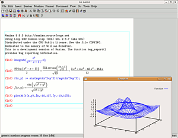

TeXmacs
Dieser Artikel wurde für die folgenden Ubuntu-Versionen getestet:
Dieser Artikel ist mit keiner aktuell unterstützten Ubuntu-Version getestet! Bitte diesen Artikel testen und das getestet-Tag entsprechend anpassen.
Zum Verständnis dieses Artikels sind folgende Seiten hilfreich:
 TeXmacs
TeXmacs  ist ein Schriftsatzprogramm für Wissenschaftler, das unter anderem die Bearbeitung von LaTeX-, HTML-, XML- und Klartext-Dokumenten ermöglicht. Das Ziel bei der Entwicklung war die Schaffung einer Umgebung, mit welcher sich hochwertige Dokumente erstellen lassen. Die Bedienung soll aber möglichst intuitiv sein. Der TeXmacs ist bedientechnisch am Emacs orientiert (baut jedoch nicht auf ihn auf) und bietet somit die zahlreichen Möglichkeiten der Steuerung mittels Tastenkombinationen. Sämtliche Elemente lassen sich aber auch über Steuerelemente einfügen oder im eingebauten Tutorial nachlesen.
ist ein Schriftsatzprogramm für Wissenschaftler, das unter anderem die Bearbeitung von LaTeX-, HTML-, XML- und Klartext-Dokumenten ermöglicht. Das Ziel bei der Entwicklung war die Schaffung einer Umgebung, mit welcher sich hochwertige Dokumente erstellen lassen. Die Bedienung soll aber möglichst intuitiv sein. Der TeXmacs ist bedientechnisch am Emacs orientiert (baut jedoch nicht auf ihn auf) und bietet somit die zahlreichen Möglichkeiten der Steuerung mittels Tastenkombinationen. Sämtliche Elemente lassen sich aber auch über Steuerelemente einfügen oder im eingebauten Tutorial nachlesen.
Alle Formate, die importiert werden können, kann TeXmacs in unterschiedlichen Stilen wiedergeben. Sogar Konsolensitzungen, beispielsweise mit der Shell oder Python können im TeXmacs abgehalten und in Formaten festgehalten werden, die sich zur Dokumentation eignen. Zusätzlich können Dokumente als PDF oder PostScript ausgegeben oder direkt gedruckt werden.
Die Möglichkeiten, LaTeX-Dateien zu bearbeiten, sind jedoch begrenzt, siehe Abschnitt 5 des Artikels unter Links. Nicht alle LaTeX-Befehle/Konstrukte werden importiert. TeXmacs-Befehle zeigen laut FAQ nur eine gewisse "Ähnlichkeit" zu LaTeX-Befehlen, und laut Artikel gehen beim Export nach LaTeX bestimmte TeXmacs-Features verloren. Laut Autor ist TeXmacs kein Frontend zu LaTeX. Eine andere FAQ-Antwort deutet an, dass die Auffassung von TeXmacs als (La)TeX-Editor ein häufiges Missverständnis ist.
Installation¶
Folgendes Paket muss installiert werden [1]:
texmacs (universe)
 mit apturl
mit apturl
Paketliste zum Kopieren:
sudo apt-get install texmacs
sudo aptitude install texmacs
Für zusätzliche Schriften muss folgendes Paket installiert werden:
texmacs-extra-fonts (universe)
mit apturl
Paketliste zum Kopieren:
sudo apt-get install texmacs-extra-fonts
sudo aptitude install texmacs-extra-fonts
Benutzung¶
Steuerung¶
Da die grundlegenden Steuerkommandos von TeXmacs nahezu identisch mit denen vom Emacs sind, sei hierzu auf die Wiki-Seite zum Emacs verwiesen. Daneben bringt TeXmacs jedoch noch eine Vielzahl weiterer Steuerkommandos mit, welche die Bearbeitung von LaTeX-Dokumenten erleichtern. Diese lassen sich z.B. in der unter den Links aufgeführten Dokumentation nachlesen.
Einsatz¶
Neben der leistungsfähigen Bearbeitung und Darstellung von LaTeX-, HTML-, XML- und Klartext-Dokumenten lässt sich der TeXmacs auch als Frontend für verschiedene freie und kommerzielle Computeralgebrasysteme verwenden (z.B. Maxima, Octave, Mathematica). Diese Plugins liegen der Standardinstallation von TeXmacs automatisch bei, so dass außer den betreffenden Computeralgebrasystemen nichts weiteres installiert werden muss.
Die folgende Übersicht listet einige Programme auf, für die TeXmacs als Frontend eingesetzt werden kann. Im TeXmacs lassen sich Sitzungen zur Benutzung dieser Programme über "Einfügen -> Sitzung" starten.
Ghostscript (gs-gpl)
Axiom (axiom, universe)
Gnuplot (gnuplot, universe)
Maxima (maxima, universe)
Octave (octave, universe)
R (r-base, universe)
Achtung!
Es kann beim Laden der Algebrasystem-Modi zu Problemen kommen. Die Ursache liegt darin, dass einige Skripte der TeXmacs Installation als standardmäßige Shell die Bash erwarten, tatsächlich aber standardmäßig die Dash verwendet wird. Zur Behebung dieses Problems, siehe das Kapitel Problemlösung weiter unten.
Maxima-Interface¶
 Als Computeralgebrasystem im TeXmacs bietet sich insbesondere Maxima an. Dieses ist nicht nur eins der vollständigsten und leistungsfähigsten freien Computeralgebrasysteme, sondern lässt sich auch dank des weit fortgeschrittenen Plugins hervorragend unter TeXmacs einsetzen. Der nachfolgende Screenshot demonstriert die Mächtigkeit des Maxima-Plugins. Mathematische Formeln werden in Echtzeit mit LaTeX angezeigt, was die Übersichtlichkeit und den Bedienungskomfort gegenüber herkömmlichen Computeralgebrasystemen stark erhöht.
Zum Starten einer Maxima-Sitzung navigiert man zu "Einfügen -> Sitzung -> Maxima". Anschließend lassen sich alle Maxima-Kommandos verwenden. Standardmäßig wird nur die Ausgabe durch LaTeX formatiert. Will man auch die Eingabe LaTeX-formatiert haben, aktiviert man dies über "Sitzung -> Eingabemethode -> Mathematik". Den Unterschied dieser beiden Eingabemodi sieht man in den blauen Zeilen im Screenshot.
Problembehebung¶
Manchmal können die Modi bestimmter Algebrasysteme nicht geladen werden, weil die für das Laden zuständigen Skripte nicht an die Standardshell Dash angepasst sind. Die betreffenden Skripte befinden sich im Verzeichnis /usr/lib/texmacs/TeXmacs/bin.
Bei den meisten Dateien in diesem Verzeichnis handelt es sich um Shell-Skripte. Diese beginnen mit der Zeile:
#!/bin/sh
Diese Zeile muss umgeändert werden zu:
#!/bin/bash
Welche der Dateien im oben genannten Verzeichnis für das korrekte Laden eines bestimmten Computeralgebrasystems geändert werden müssen, lässt sich aus den Dateinamen herauslesen. So ist beispielsweise für maxima das Anwenden der obigen Prozedur auf die Dateien maxima_detect und tm_maxima notwendig. Weitere Informationen zu dieser Problematik findet man im folgenden Bug-Report .
Links¶
Getting help on TeXmacs and finding documentation
- Sammlung von einführender DokumentationGNU TeXmacs: a scientific editing platform
– Beschreibung durch den Programmautor. Abschnitt 5 nennt die Grenzen der Interaktion mit LaTeX.
GNU TeXmacs – Wikipedia
TeXmacs–maxima interface
- Einführendes Tutorial zur Verwendung von Maxima unter TeXmacs mit vielen Abbildungen
- Erstellt mit Inyoka
-
 2004 – 2017 ubuntuusers.de • Einige Rechte vorbehalten
2004 – 2017 ubuntuusers.de • Einige Rechte vorbehalten
Lizenz • Kontakt • Datenschutz • Impressum • Serverstatus -
Serverhousing gespendet von